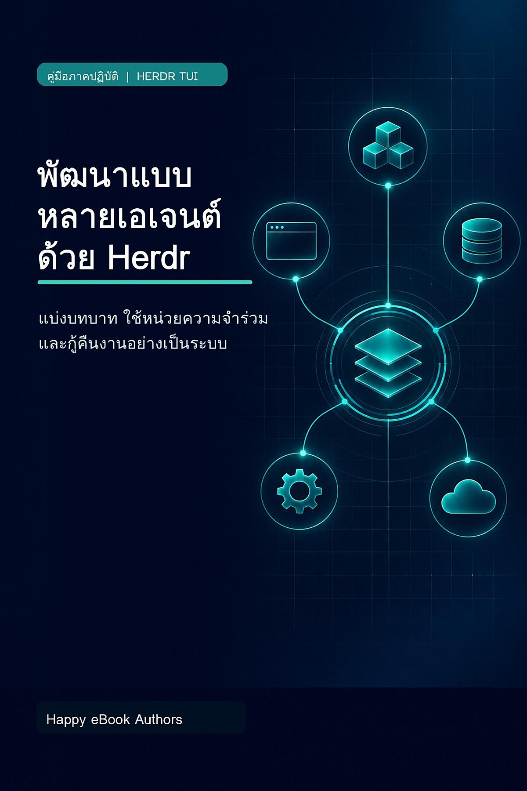

พัฒนาแบบหลายเอเจนต์ด้วย Herdr
แบ่งบทบาท ใช้หน่วยความจำร่วม และกู้คืนงานอย่างเป็นระบบ

พัฒนาแบบหลายเอเจนต์ด้วย Herdr
แบ่งบทบาท ใช้หน่วยความจำร่วม และกู้คืนงานอย่างเป็นระบบ
การเปิดหน้าต่างแชตหลายหน้าต่างยังไม่พอจะสร้างทีม AI Agent ที่เชื่อถือได้ ต้องกำหนดบทบาทและขอบเขตไฟล์ จัดลำดับงานที่พึ่งพากัน แล้วตรวจผลงานด้วยการทดสอบและหลักฐาน จึงจะรับรู้ข้อผิดพลาดและกู้คืนได้อย่างเป็นระบบ หนังสือเล่มนี้ใช้ Herdr TUI และ Python พาเริ่มจากโปรแกรมคำนวณขนาดเล็ก ไปสู่การแบ่งงานระหว่าง Agent การตรวจโค้ดอย่างอิสระ การส่งต่องานและหน่วยความจำร่วม เว็บไซต์จัดการงาน ทีมวิจัยที่ติดตามแหล่งอ้างอิง ไปป์ไลน์พัฒนาที่หยุดเมื่อผิดพลาด และคิวงาน SQLite ที่กู้คืนได้ แต่ละบทอธิบายขอบเขตงานของแต่ละบทบาท คำสั่ง สัญญาข้อมูล การจัดการความล้มเหลว และวิธีตรวจรับที่ทำซ้ำได้ พร้อมตัวอย่างโปรแกรม การทดสอบ และ prompt สำหรับบทบาทต่าง ๆ หนังสือแยกหลักฐานจากคำกล่าวอ้าง และไม่เหมารวมว่าความเร็วหรือความแม่นยำเพิ่มขึ้นเพียงเพราะมี Agent มากขึ้น เหมาะสำหรับนักพัฒนา ผู้สอน ผู้เรียนด้วยตนเอง และทีมขนาดเล็กที่มีพื้นฐาน Python, Git และการใช้เทอร์มินัล